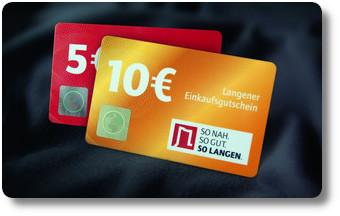

Einkaufsgutschein für Langen
Seit vielen Jahren wurde in Langen überlegt, wie man die Kaufkraft der Menschen im Ort halten oder zurückholen kann. Denn nicht nur der online-Handel setzt den lokalen Geschäften zu, sondern natürlich auch die Verlockungen von großen Einkaufszentren außerhalb Langens.
Jetzt soll der Langener „Einkaufsgutschein“ helfen, dies zu ändern.
Der Einkaufsgutschein ist dabei nichts anderes als eine kleine Plastikkarte (ohne Chip) mit einem Wert von 5 oder 10 Euro.
Die Idee ist nicht neu und wird schon in anderen Gegenden Deutschlands erfolgreich eingesetzt. Daher freue ich mich um so mehr, dass wir in Langen jetzt auch mitmachen.
Das Kärtchen ist bei verschiedenen Ausgabestellen erhältlich und kann nur in teilnehmenden Langener Geschäften beim Einkauf eingelöst werden. Die Zahl der Geschäfte ist mit nahezu 60 durchaus beachtlich und kann sich in nächster Zeit noch weiter erhöhen. Für interessierte Händler gab es dafür ein pdf-Dokument vom Langener Gewerbeverein. (Update 2019: Die pdf-Datei ist nicht mehr verfügbar.)
Ich denke, die Karte ist eine tolle Sache! Jeder, der schon mal etwas verschenken wollte, weiß, dass Gutscheine oft das Mittel der Wahl sind. Mit diesem Gutschein steht dem Beschenktem die ganze Vielfalt der Langener Läden offen. Die Zahl der teilnehmenden Geschäfte ist beachtlich und schon das Schmökern durch diese Liste lässt Shopping-Lust aufkommen. Langener (und Nicht-Langener) Bürger und Unternehmen können von nun an mit diesem Gutschein für strahlende Gesichter bei Händlern und Konsumenten sorgen. Wie wäre es zum Beispiel mit einem Gutschein zu Weihnachten für die Kollegen? Das geht ab jetzt ganz einfach…
Für die Zukunft wünsche ich mir die Möglichkeit, Gutscheine auch online bestellen zu können. Warum? Man kommt viel einfacher an den Gutschein heran und ist nicht an die Öffnungszeiten und Räumlichkeiten der Ausgabestellen gebunden. Trotzdem bleibt das Geld in der Stadt. Die Frage ist also eher: Warum nicht? Ach ein höherer Grundbetrag von vielleicht 50 Euro wäre auch nicht schlecht – für größere Geschenke muss man derzeit noch mit vielen Kärtchen hantieren.
Auf jeden Fall eine gute Sache. Ich bin total gespannt, wie der Gutschein angenommen wird und freue mich, dass hier die Stadt, der Gewerbeverein und die vielen Geschäfte an einem Strang ziehen. Jetzt ist es nur noch nötig, dass ein wenig Werbung gemacht wird: In sozialen Netzwerken genauso, wie durch Mundpropaganda und offline-Werbung. Dann, glaube ich, steht einem Erfolg des Gutscheins nichts mehr im Weg. Hier gibt`s noch mehr Infos über das ganze Projekt.